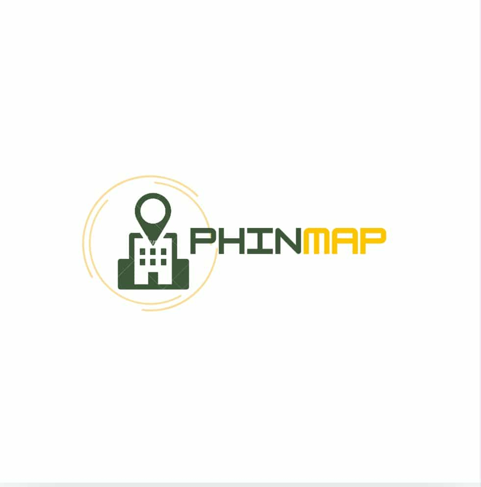
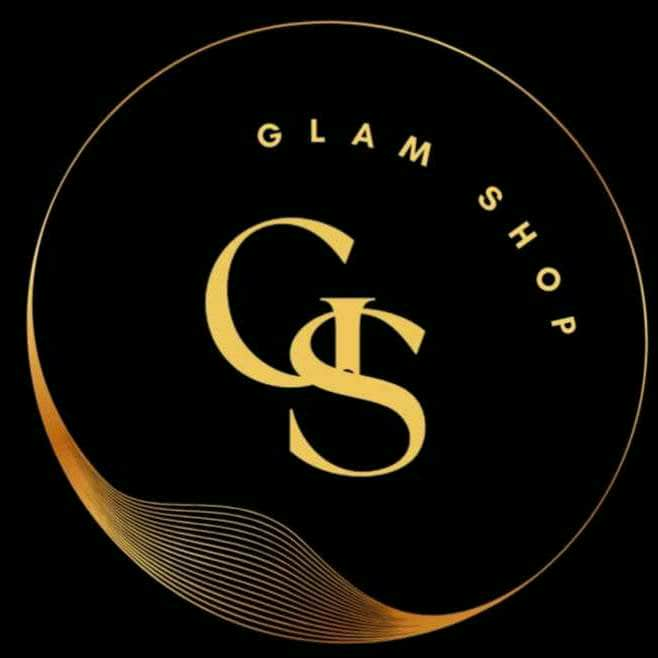
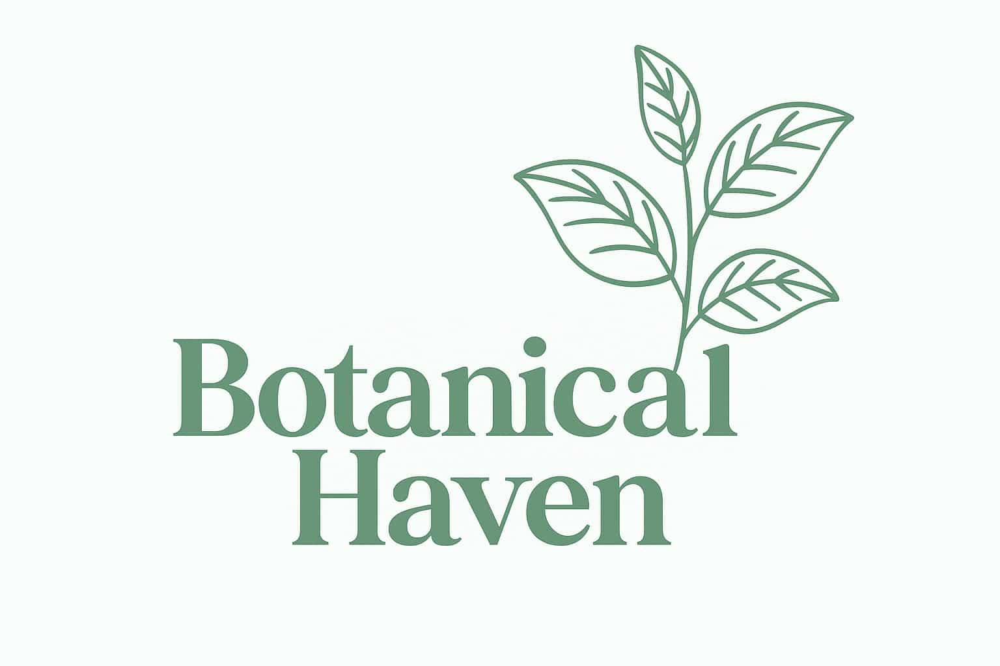
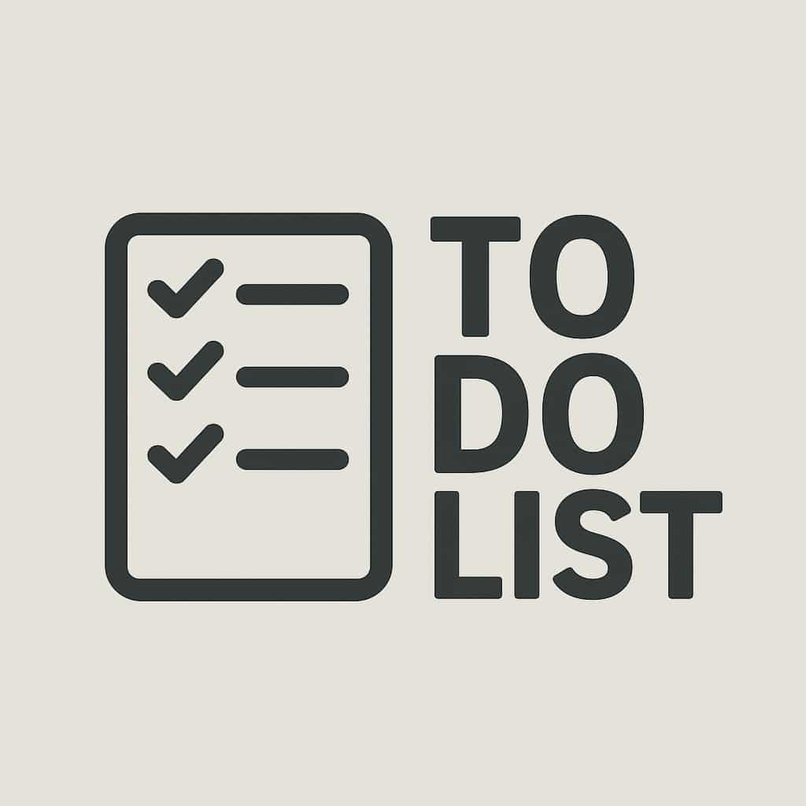
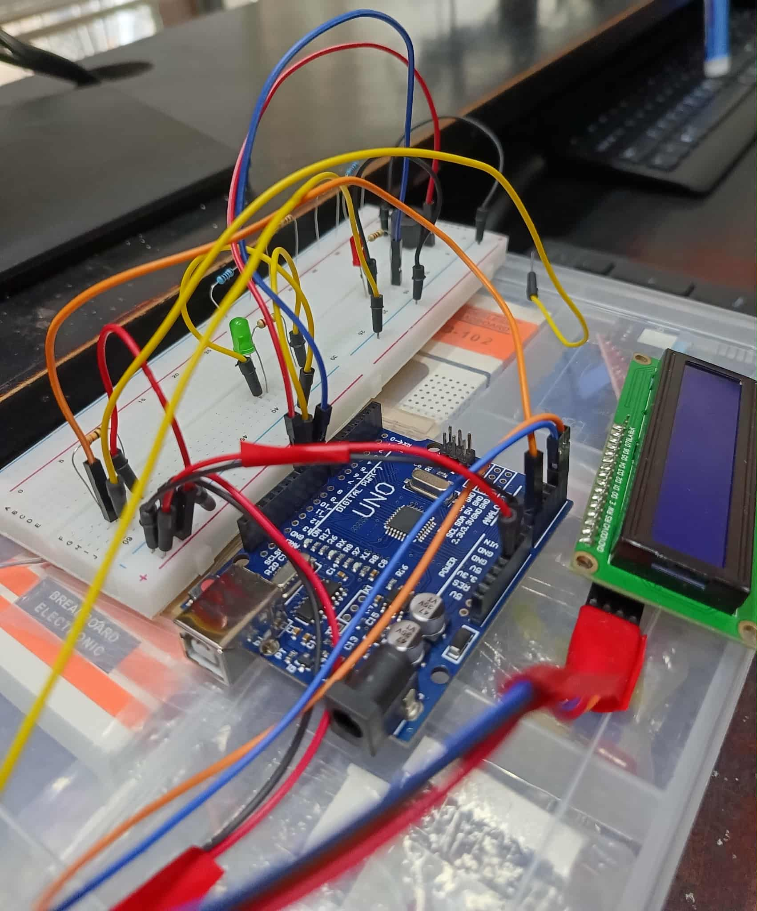

Promissory Note Webpage is for student feedback about their experience when applying for a
Promissory Note at PHINMA University of Iloilo. Through this project we can identify
which steps in applying for a Promissory Note need improvement so the process will be faster.

GlamShop is your one-stop online boutique for all things glamorous.
Whether you're preparing for a dazzling party or a formal event, GlamShop offers a curated collection of elegant gowns,
luxurious perfumes, stunning jewelry, and other essential accessories to complete your perfect look.
With GlamShop, you can effortlessly shine with style, sophistication, and confidence.

Botanical Haven is a mobile e-commerce app designed
for plant lovers to easily browse and purchase indoor and outdoor plants.
It offers detailed product information, smooth navigation, and a user-friendly interface for a convenient shopping experience.
Its mission is to make plant shopping simple, enjoyable, and accessible,
providing a digital space for anyone to bring nature into their homes..

Vendee is an innovative online shopping platform that puts customization at the heart of your shopping experience.
Unlike typical e-commerce apps, Vendee adapts to your style, preferences,
and needs — making every search and suggestion feel like it was made just for you..
To Do List A terminal-based To-Do List application developed in Python. It provides a straightforward interface to manage tasks, allowing users to add, view, complete, and delete items efficiently. Designed to run in the command line, it's a lightweight and effective tool for task tracking.

Digital Ohmmeter is a device that measures electrical resistance accurately using an Arduino Uno and a voltage divider circuit. It displays the result on an LCD screen and gives feedback through an LED and buzzer. Designed for easy and precise testing, it helps in electronic troubleshooting using basic components like resistors, wires, and a breadboard.

Digital Ohmmeter is a device that measures electrical resistance accurately using an Arduino Uno and a voltage divider circuit. It displays the result on an LCD screen and gives feedback through an LED and buzzer. Designed for easy and precise testing, it helps in electronic troubleshooting using basic components like resistors, wires, and a breadboard.